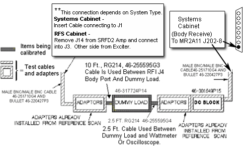
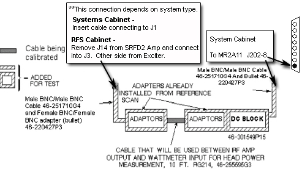

Illustration 2 - Dummy Load and Cables
Illustration 3 - Amplifier to Wattmeter Cable.
Illustration 2: CONNECTIONS FOR DUMMY LOAD + CABLES SCAN

Illustration 3: AMP TO WATTMETER CABLE SCAN

| NOTE: | "Bullet" RF connector referred to in Illustration 2 and Illustration 3 is a female BNC/female BNC adapter, 46-220427P3. |